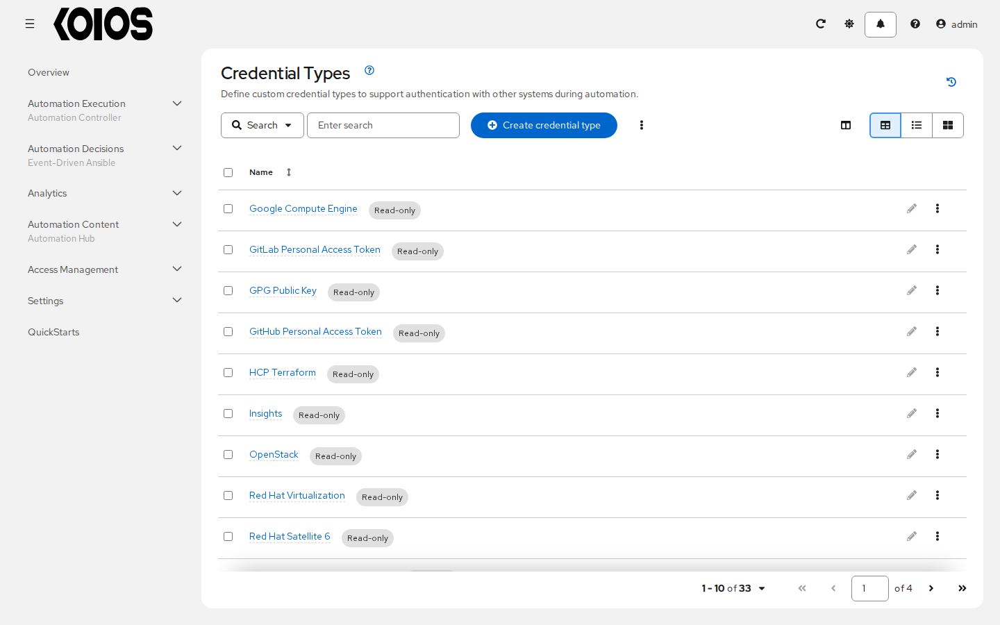
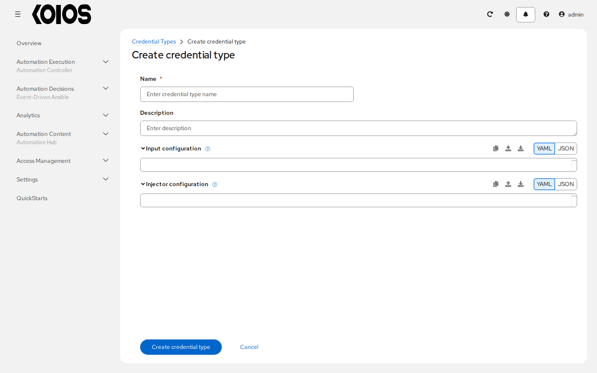
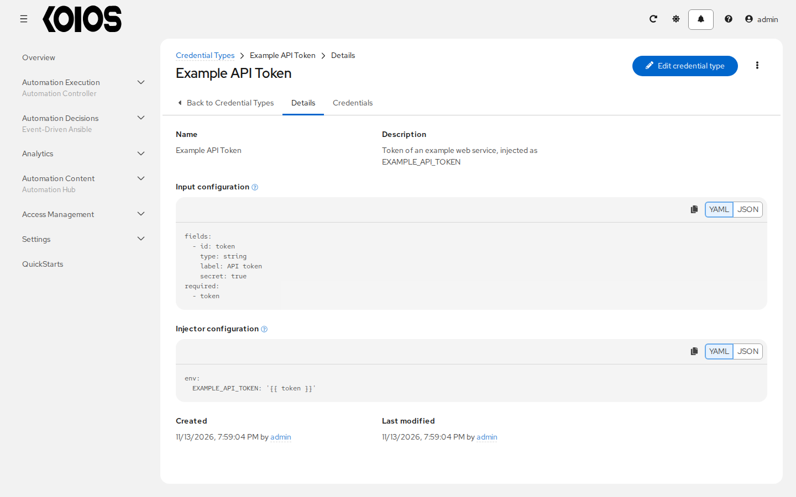
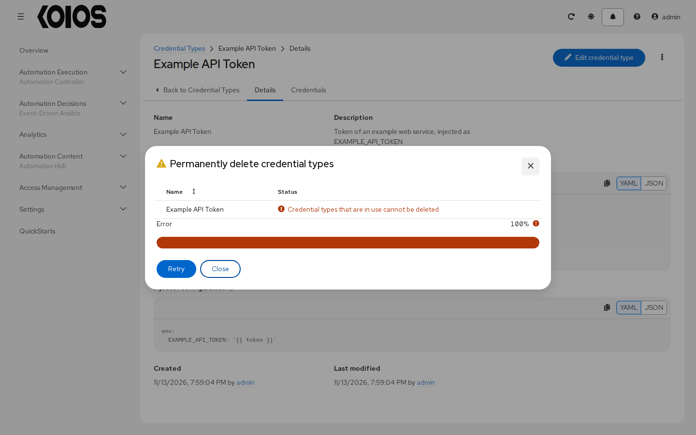
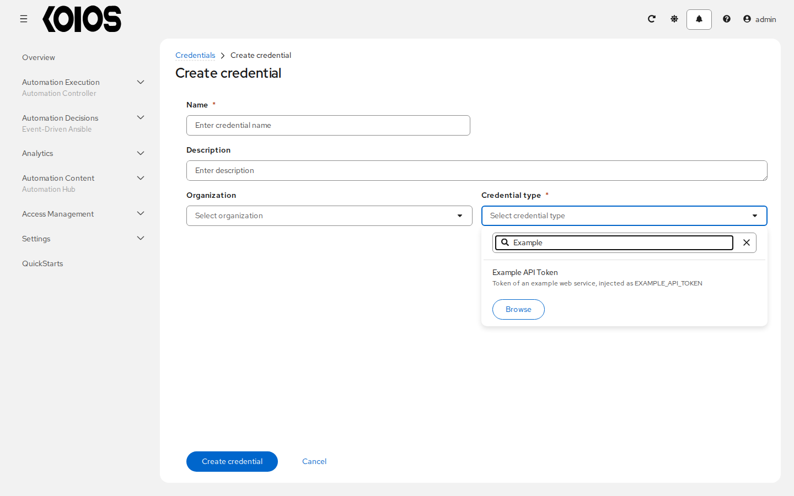

11. Custom Credential Types
As a system administrator, you can define a custom credential type in a standard format using a YAML or JSON definition, and then create credentials of that type and use them in jobs and inventory updates. A custom credential type works in ways similar to the existing credential types. For example, you could create a custom credential type that injects an API token for a third-party web service into an environment variable, which your playbook or inventory plugin could consume.
Custom credentials support the following ways of injecting their authentication information:
Environment variables
Ansible extra variables
File-based templating (i.e., generating
.inior.conffiles that contain credential values)
A job template can use one credential of each credential type; Vault credentials are the exception, and you can attach several of them when each one has a different Vault identifier.
Note
When creating a new credential type, you are responsible for avoiding collisions in the extra_vars, env, and file namespaces. Environment variables that start with ANSIBLE_ are not allowed, because they may affect the configuration of Ansible, and neither are variables reserved by automation controller. Only system administrators can create and edit credential types.
Credential types created in the user interface are of kind cloud; through the API you can also create them with kind net. Credentials of the Ansible Galaxy/Automation Hub API Token type are the content sources from which project updates install collections and roles: they are assigned to organizations, in order of precedence. See Creating a New Organization and Using Collections via Hub.
11.1. Getting Started with Credential Types
Open Automation Execution > Infrastructure > Credential Types. The list shows the credential types provided by automation controller, marked Read-only, which cannot be edited or deleted, and the custom credential types that have been created.

To view more information about a credential type, click its name. Each credential type shows its configuration in the Input configuration and Injector configuration fields; both YAML and JSON formats are supported. The Credentials tab lists the credentials of that type.
11.2. Create a New Credential Type
To create a new credential type:
Click Create credential type in the Credential Types list.

Enter the Name (required) and an optional Description.
Note
When creating a new credential type, do not inject environment variables whose names start with ANSIBLE_, as they are invalid for custom credential types, and do not use tower as an input field ID, as it is reserved.
In the Input configuration field, specify an input schema which defines a set of ordered fields for that type. The format can be in YAML or JSON, as shown:
YAML
fields: - type: string id: username label: Username - type: string id: password label: Password secret: true required: - username - passwordJSON
{ "fields": [ { "type": "string", "id": "username", "label": "Username" }, { "secret": true, "type": "string", "id": "password", "label": "Password" } ], "required": ["username", "password"] }The configuration in JSON format below show each field and how they are used:
{ "fields": [{ "id": "api_token", # required - a unique name used to # reference the field value "label": "API Token", # required - a unique label for the # field "help_text": "User-facing short text describing the field.", "type": ("string" | "boolean") # defaults to 'string' "choices": ["A", "B", "C"] # (only applicable to `type=string`) "format": "ssh_private_key" # optional, can be used to enforce data # format validity for SSH private key # data (only applicable to `type=string`) "secret": true, # if true, the field value will be encrypted "multiline": false # if true, the field should be rendered # as multi-line for input entry # (only applicable to `type=string`) },{ # field 2... },{ # field 3... }], "required": ["api_token"] # optional; one or more fields can be marked as required },
When type=string, fields can optionally specify multiple choice options:
{ "fields": [{ "id": "api_token", # required - a unique name used to reference the field value "label": "API Token", # required - a unique label for the field "type": "string", "choices": ["A", "B", "C"] }] },
In the Injector configuration field, enter environment variables or extra variables that specify the values a credential type can inject. The format can be in YAML or JSON (see examples in the previous step). The injectors can only reference the input fields of the credential type. For the
usernameandpasswordinputs of the previous step, the configuration in JSON format below shows each kind of injector:
{
"env": {
"THIRD_PARTY_CLOUD_USERNAME": "{{ username }}",
"THIRD_PARTY_CLOUD_PASSWORD": "{{ password }}"
},
"extra_vars": {
"some_extra_var": "{{ username }}:{{ password }}"
}
}
Credential Types can also generate temporary files to support .ini files or certificate/key data. For a credential type with an api_token input field:
{
"file": {
"template": "[mycloud]\ntoken={{ api_token }}"
},
"env": {
"MY_CLOUD_INI_FILE": "{{ tower.filename }}"
}
}
In this example, automation controller will write a temporary file that contains:
[mycloud]\ntoken=SOME_TOKEN_VALUE
The absolute file path to the generated file will be stored in an environment variable named MY_CLOUD_INI_FILE.
An example of referencing multiple files in a custom credential template is as follows:
Inputs
{
"fields": [{
"id": "cert",
"label": "Certificate",
"type": "string"
},{
"id": "key",
"label": "Key",
"type": "string"
}]
}
Injectors
{
"file": {
"template.cert_file": "[mycert]\n{{ cert }}",
"template.key_file": "[mykey]\n{{ key }}"
},
"env": {
"MY_CERT_INI_FILE": "{{ tower.filename.cert_file }}",
"MY_KEY_INI_FILE": "{{ tower.filename.key_file }}"
}
}
Click Create credential type when done. The details of the new credential type open:

Click Edit credential type to modify it. Once credentials of a credential type exist, its Input configuration cannot be changed, and the credential type cannot be deleted: delete those credentials first. Deleting a credential type that is in use fails with the message “Credential types that are in use cannot be deleted”:

Verify that the newly created credential type can be selected in the Credential type field when creating a new credential:

For details on how to create a new credential, see Credentials.